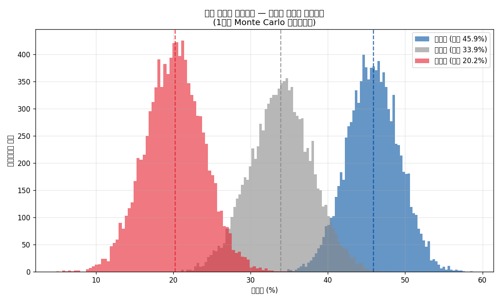
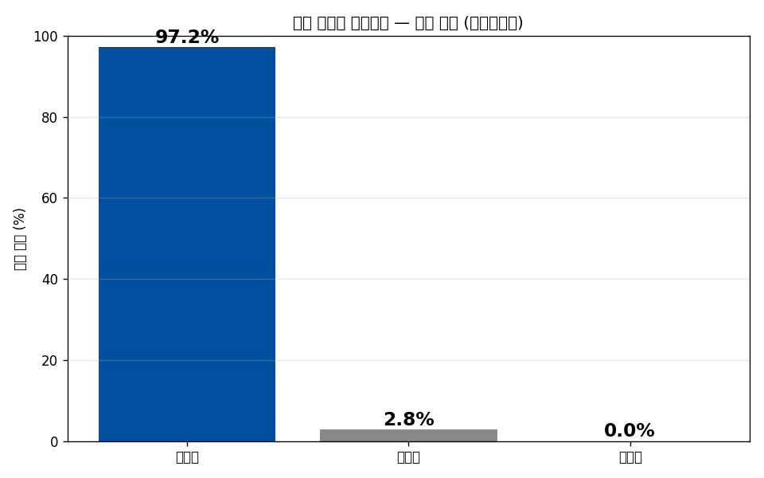
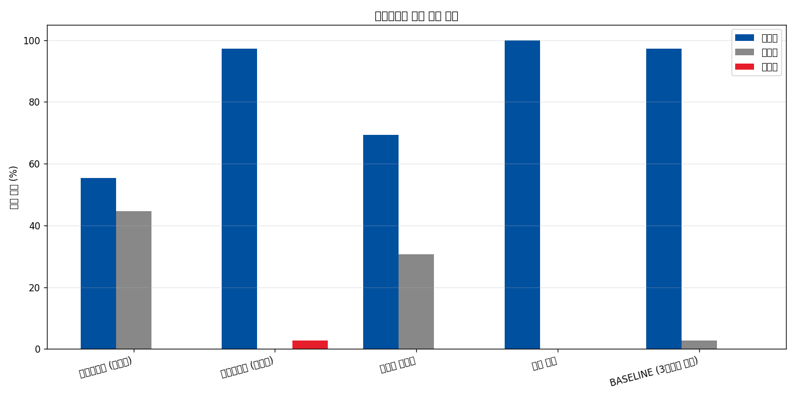
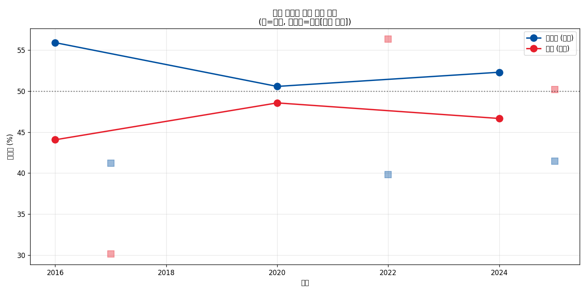

후보별 당선 확률
10,000회 Monte Carlo 시뮬레이션 기준
예상 득표율 분포
사후 Dirichlet에서 1만번 샘플링 · 가는 막대는 90% 신뢰구간, 굵은 점은 중앙값
시나리오별 당선 확률
현재 3자 구도가 다른 방향으로 바뀔 때의 시뮬레이션
- 보수단일화는 후보가 누구냐가 핵심 — 한동훈 단일화: 압승 · 박민식 단일화: 패배
- 한동훈 +15% 모멘텀이 있으면 충분히 역전 가능, 16일 변동성 큼
- 박민식 사퇴 → 한동훈으로 보수 결집이 하정우의 최대 위협
예측 변화 추이
매일 자동 재계산 · 시간이 지나면 추세선이 채워집니다
방법론
과거 선거로 추정한 기준선
북구갑 최근 3회 총선(2016/2020/2024)을 가중평균(0.5, 0.3, 0.2)하여 진보·보수 베이스 추정. 보궐선거 보정 -2%p(투표율 하락에 따른 진보 불리). 보수 베이스를 한동훈 65% / 박민식 35%로 분할.
최근 14일 폴 가중평균
최근 14일 내 3자 여론조사 다수를 recency-weighted 평균(반감기 7일). 단일 폴 의존을 제거해 폴 간 변동성도 반영. 부동층은 후보별 흡수 가정(하정우 35% / 한동훈 40% / 박민식 25%)으로 배분.
Effective Sample + 베이지안
Dirichlet-Multinomial 결합. 폴 표본 합계를 design_effect=7로 할인한 effective n 사용 (비표본오차·polling miss 반영). 사전 강도 = 200.
10,000회 + 선거일 드리프트
사후 Dirichlet에서 10,000번 샘플링 + 선거일까지의 변동성을 정규 노이즈(σ=4.5%p @ 14일, 보수 후보 간 ρ=−0.5)로 주입. 각 회마다 argmax = 당선자.
핵심 가정과 위험도
아래 가정 중 하나라도 크게 틀리면 결과가 달라집니다
여론조사 모음 (3자 + 양자대결)
현재까지 공개된 부산 북구갑 여론조사 한눈에 — 한동훈이 하정우를 앞선 결과는 단 1건. 모델은 최근 14일 폴 3건(여론조사꽃·메트릭스·에이스리서치)을 recency-weighted 평균해 사용.
검색 결과 채널A가 직접 의뢰한 부산 북구갑 여론조사는 확인되지 않습니다. 채널A 「김진의 돌직구쇼」는 KBS부산·한국리서치(하정우 37 · 한동훈 30 · 박민식 17)를 인용 보도했으며, "한동훈이 하정우를 앞섰다"는 형태로 인용되는 수치는 부산MBC-한길리서치 양자대결 A (한동훈 38.2 vs 하정우 37.4) 한 건으로 추정됩니다.
선거 배경
왜 보궐선거인가
21대 의원 전재수(민주)가 2026년 부산광역시장 출마를 위해 2026-04-30 의원직 사퇴. 그 빈자리를 채우는 보궐선거가 같은 날(6월 3일) 진행되는 부산시장 선거와 동시에 치러집니다.
3자 구도
하정우(더불어민주당) vs 박민식(국민의힘) vs 한동훈(무소속). 한동훈의 무소속 출마로 인한 보수 분열이 이번 선거의 결정적 변수.
북구갑은 어떤 지역구
보수 우세 부산에서 민주당이 3연승(2016/2020/2024)한 거의 유일한 지역구. 단, 대선/지방선거에서는 보수가 더 잘 나옴 → 선거 종류별 갭이 큰 변동성 있는 곳.
상세 시각화
Monte Carlo 분포 · 역대 추세 · 시나리오




출처 모음 (Sources)
본 페이지에서 인용한 모든 자료의 원문 링크
📊 여론조사 (Polls)
- 부산MBC · 한길리서치 — 3자 (5/3–5/4) 하정우 34.3 · 한동훈 33.5 · 박민식 21.5
- 부산MBC · 한길리서치 — 양자 (한 vs 하 0.8%p) ★ 한동훈 38.2 ▶ 하정우 37.4
- KBS부산 · 한국리서치 (경향 보도, 5/8–5/10) 하정우 37 · 한동훈 30 · 박민식 17
- 뉴스1 · 한국갤럽 (머니투데이 보도, 5/12–5/13) 하정우 39 · 한동훈 29 · 박민식 21
- SBS · 입소스 하정우 38 · 박민식 26 · 한동훈 21
- 여론조사꽃 (데일리안 보도, 5/15) 하정우 41.7 · 한동훈 32.2 · 박민식 21.1
- MBC · 코리아리서치 (5/16–5/18) 하정우 38 · 한동훈 33 · 박민식 20
- 뉴시스 · 에이스리서치 (파이낸셜뉴스 보도, 5/17–5/18) 현재 모델 입력 · 하정우 40.4 · 한동훈 32.7 · 박민식 20.9
📺 방송 · 영상
📰 보도 · 분석
🏛️ 1차 자료 (선거 · 인구 통계)
📚 위키 (2차 자료, 데이터 수집 사용)
- 위키백과 — 부산광역시 22대 / 21대 / 20대 총선
- 위키백과 — 19대 / 20대 / 21대 대선 (부산광역시)
- 위키백과 — 제7회·제8회 전국동시지방선거 (부산광역시)
- 위키백과 — 부산 북구의 국회의원